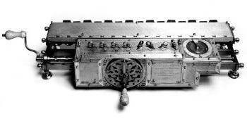
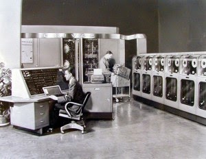
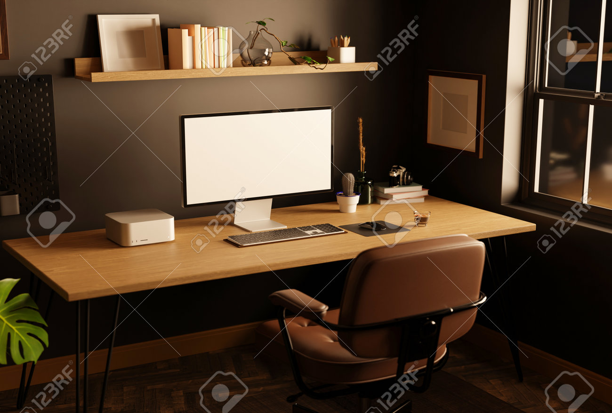
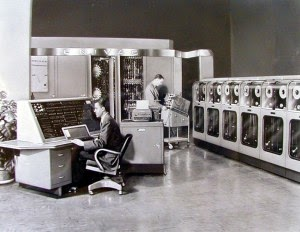
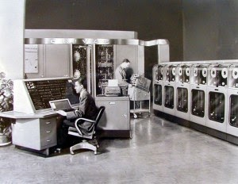

História do Computador
A palavra “computador” vem do verbo “computar” que, por sua vez, significa “calcular”. Sendo assim, podemos pensar que a criação de computadores começa na idade antiga, já que a relação de contar já intrigava os homens.
Dessa forma, uma das primeiras máquinas de computar foi o “ábaco”, instrumento mecânico de origem chinesa criado no século V a.C.
Assim, ele é considerado o “primeiro computador”, uma espécie de calculadora que realizava operações algébricas.
No século XVII, o matemático escocês John Napier foi um dos responsáveis pela invenção da "régua de cálculo". Trata-se do primeiro instrumento analógico de contagem capaz de efetuar cálculos logaritmos. Essa invenção foi considerada a mãe das calculadoras modernas.
Por volta de 1640, o matemático francês Pascal inventou a primeira máquina de calcular automática. Essa máquina foi sendo aperfeiçoada nas décadas seguintes até chegar no conceito que conhecemos hoje.
A primeira calculadora de bolso capaz de efetuar os quatro principais cálculos matemáticos, foi criada por Gottfried Wilhelm Leibniz.
Esse matemático alemão desenvolveu o primeiro sistema de numeração binário moderno que ficou conhecido com "Roda de Leibniz".

Evoluçao
Evolução dos Computadores
O computador, tal qual conhecemos hoje, passou por diversas transformações e foi se aperfeiçoando ao longo do tempo, acompanhando o avanço das áreas da matemática, engenharia, eletrônica. É por isso que não existe somente um inventor.
De acordo com os sistemas e ferramentas utilizados, a história da computação está dividida em quatro períodos.
Primeira Geração (1951-1959)
Os computadores de primeira geração funcionavam por meio de circuitos e válvulas eletrônicas. Possuíam o uso restrito, além de serem imensos e consumirem muita energia.
Um exemplo é o ENIAC (Eletronic Numerical Integrator and Computer) que consumia cerca de 200 quilowatts e possuía 19.000 válvulas.
Segunda Geração (1959-1965)
Ainda com dimensões muito grandes, os computadores da segunda geração funcionavam por meio de transistores, os quais substituíram as válvulas que eram maiores e mais lentas. Nesse período já começam a se espalhar o uso comercial.

Terceira Geração (1965-1975)
Os computadores da terceira geração funcionavam por circuitos integrados. Esses substituíram os transistores e já apresentavam uma dimensão menor e maior capacidade de processamento.
Foi nesse período que os chips foram criados e a utilização de computadores pessoais começou.
Atualidade
Quarta Geração (1975-até os dias atuais)
Com o desenvolvimento da tecnologia da informação, os computadores diminuem de tamanho, aumentam a velocidade e capacidade de processamento de dados. São incluídos os microprocessadores com gasto cada vez menor de energia.
Nesse período, mais precisamente a partir da década de 90, há uma grande expansão dos computadores pessoais.
Além disso, surgem os softwares integrados e a partir da virada do milênio, começam a surgir os computadores de mão. Ou seja, os smartphones, iPod, iPad e tablets, que incluem conexão móvel com navegação na web.

 Segunda Geração (1959-1965)
Ainda com dimensões muito grandes, os computadores da segunda geração funcionavam por meio de transistores, os quais substituíram as válvulas que eram maiores e mais lentas. Nesse período já começam a se espalhar o uso comercial.

Terceira Geração (1965-1975)
Os computadores da terceira geração funcionavam por circuitos integrados. Esses substituíram os transistores e já apresentavam uma dimensão menor e maior capacidade de processamento.
Foi nesse período que os chips foram criados e a utilização de computadores pessoais começou.
Segunda Geração (1959-1965)
Ainda com dimensões muito grandes, os computadores da segunda geração funcionavam por meio de transistores, os quais substituíram as válvulas que eram maiores e mais lentas. Nesse período já começam a se espalhar o uso comercial.

Terceira Geração (1965-1975)
Os computadores da terceira geração funcionavam por circuitos integrados. Esses substituíram os transistores e já apresentavam uma dimensão menor e maior capacidade de processamento.
Foi nesse período que os chips foram criados e a utilização de computadores pessoais começou.